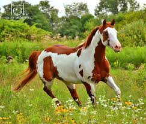
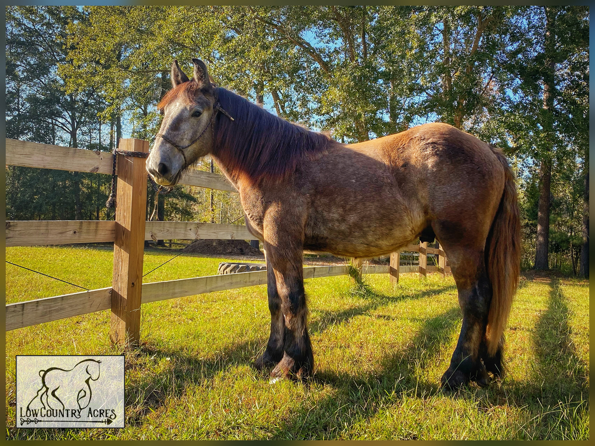
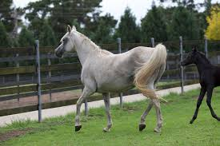

There are a lot of different breds of horses. Here are some of the breds of horses:
Some of the things that make the Paint horse uniqu is that they have are very easygoing, they are also very friendly. Another thing is their color pattern. Each horse has some white spots on their coats. No other horse bred has those spots on their coats. For the Draft horse, they pull some have things. Also, they are one of the biggest horses in America. a unqui thing about them, is that they have white feathers around their feet. They have a very mild temper, just like Paint horses. for a American Quarter horse, they are one of the fastest race horses alive! They can travel up to 44 miles per hour for short bursts. These horses are used for races mainly. For the Arabian horse, they are mainly used for showing. They have an arched neck and a "dished" face. It also has a high set tail. These are some of the horses positives.
Images of what these horses look like.

Paint horseI got this image from DeviantArt.

Draft horseI got this from Wikimedia Commons.
 American Quarter horse
American Quarter horse
I go this on pexels.com.

Arabian horse